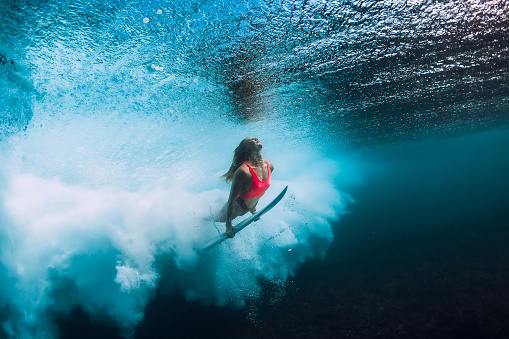

big wave surfing

what is big wave surfing
Big wave surfing is a discipline within surfing in which experienced surfers paddle into, or are towed into,
waves which are at least 20 feet (6.2 m) high, on surf boards known as "guns" or towboards.[1] Sizes of the board
needed to successfully surf
these waves vary by the size of the wave as well as the technique the surfer uses to reach the wave. A larger,
longer board allows a rider to paddle
fast enough to catch the wave and has the advantage of being more stable, but it also limits maneuverability
and surfing speed.
- Zushi, Japan (since 2004)
- Badajoz, Spain

- Zushi, Japan (since 2004)
- Badajoz, Spain
the biggest waves in the worlde
Big wave surfing is a discipline within surfing in which experienced surfers paddle into,
or are towed into, waves which are at least 20 feet (6.2 m) high,
on surf boards known as "guns" or towboards.[1]
Sizes of the board needed to successfully surf these waves vary by the size of the wave as well as the technique the surfer uses to reach the wave.
A larger, longer board allows a rider to paddle fast enough to catch the wave and has the advantage of being more stable
, but it also limits maneuverability and surfing speed.[2][3]
In a big wave wipeout, a breaking wave can push surfers down 20 to 50 feet (6.2 m to 15.5 m)
below the surface. Once they stop spinning